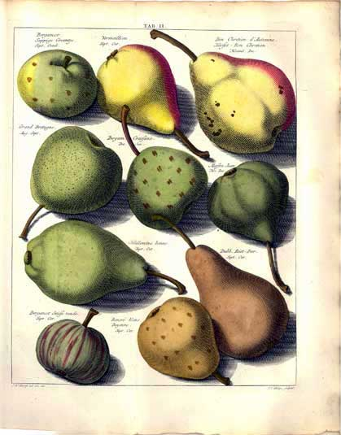
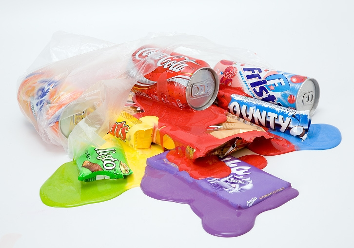
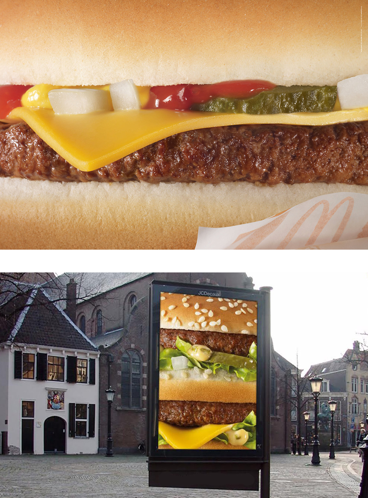
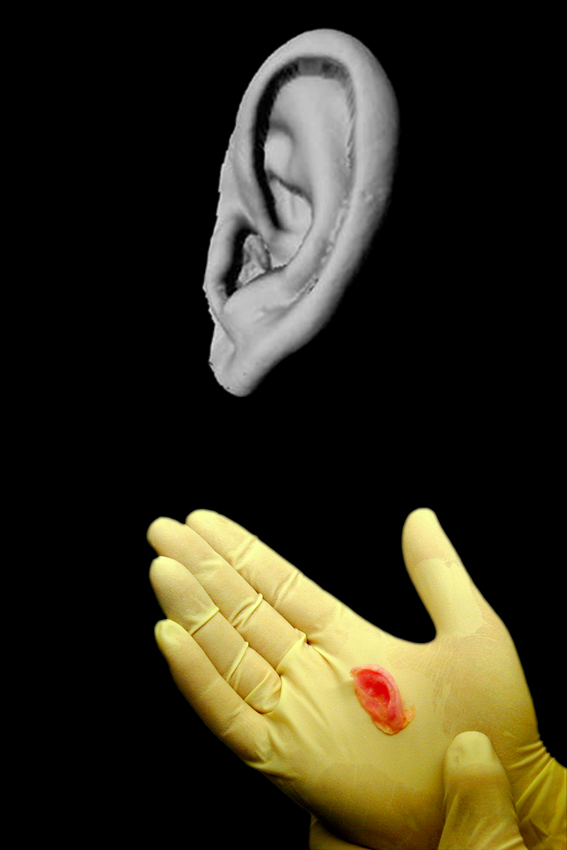
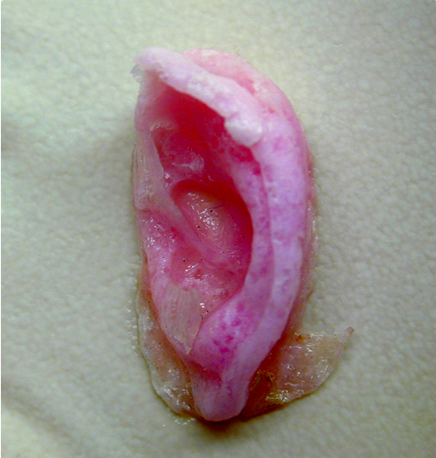
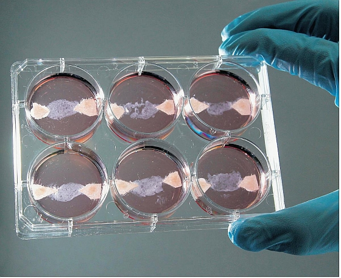

Kunstzinnige vertaling van de betekenis van voedsel
Hoe is de betekenis die de Westerse mens aan zijn voeding geeft terug te zien in kunst en vormgeving?
Inleiding
Voeding is een noodzakelijke levensbehoefte. Ze beweegt mee met de ontwikkelingen die de mens doorloopt. Maar achter het begrip voeding schuilt meer dan simpel een manier van overleven. Voeding heeft betekenis gekregen binnen religie, politiek en wetenschap, die betekenis is uitgebeeld in de kunst en de vormgeving. Het is fascinerend om via deze bronnen te zien, hoe voeding door de tijd heen van betekenis is veranderd. Deze veranderingen intrigeren mij en vormen daarom het onderwerp van deze scriptie.
Voeding is een noodzakelijke levensbehoefte. Ze beweegt mee met de ontwikkelingen die de mens doorloopt. Maar achter het begrip voeding schuilt meer dan simpel een manier van overleven. Voeding heeft betekenis gekregen binnen religie, politiek en wetenschap, die betekenis is uitgebeeld in de kunst en de vormgeving. Het is fascinerend om via deze bronnen te zien, hoe voeding door de tijd heen van betekenis is veranderd. Deze veranderingen intrigeren mij en vormen daarom het onderwerp van deze scriptie.
Dit onderzoek laat de westerse consument zien welke betekenis er gegeven kan worden aan voeding. Door vervreemding van onze voedselbronnen door een uitgebreid productieproces is de betekenis vervaagd en daardoor oppervlakkig geworden. Kunst en vormgeving zijn een manier waarop deze betekenis toegankelijk in beeld wordt gebracht en waarmee het bewustzijn over ons voedsel wordt vergroot.
Er zijn veel nieuwe ontwikkelingen in de productie en vormgeving van voedsel gaande, waardoor de huidige betekenis van voeding zal gaan veranderen. Zoals bijvoorbeeld de nieuwe manier van vlees produceren door middel van het in-vitrovlees. Of door groente te verbouwen in een lab onder ledlicht, zoals in PlantLab Den Bosch.
Met dit onderzoek wil ik op zoek gaan naar de betekenis die voeding in de westerse cultuur heeft en hoe dat tot uiting komt in kunst en vormgeving. Dit leidt tot de vraag:
Hoe is de betekenis die de westerse mens aan zijn voeding geeft, terug te zien in kunst en vormgeving?
In hoofdstuk 1 start ik dit onderzoek door voor verschillende periodes in de geschiedenis na te gaan, op welke manier de westerse mens zijn betekenis van voeding tot uiting bracht. Dit als symbool voor status, religie en wetenschap. In hoofdstuk 2 beschrijf ik hoe de betekenisgeving van voeding tot uiting komt in de huidige westerse samenleving. Ik toon dit door kunst en advertenties te beschijven. En ik sluit af met hoofdstuk 3 over hoe de toekomstige betekenis zou kunnen worden, door te reflecteren op de nieuwe ontwikkelingen rond de productie van voedsel.
1.
Betekenis van voeding in het vroege begin van de mensheid
1.1 Van verzamelaars tot landbouwers
In de natuur zijn in de afgelopen 6000 jaar vele groente- en fruitsoorten ontstaan. Op deze ontwikkelingen heeft ook de mens zijn invloed uitgeoefend. Door selectief verschillende planten bij elkaar te zetten, zijn vervolgens via kruisbestuivingen nieuwe soorten of mutanten gevormd. Zo is de mens, vanaf zijn begintijd, bezig met het opbouwen van voedsel-zekerheid.
Ons voedselsysteem is inmiddels gebaseerd op landbouw. Dat klinkt logischer dan het in werkelijkheid is. Landbouw is eigenlijk nog maar een nieuwigheid in de 150.000 jaar dat de moderne mens (Homo sapiens) op aarde is. De moderne mens leefde 150.000 jaar terug in groepen zonder vaste verblijfplaats. In deze periode wordt de mens beschouwd als de ‘jager-verzamelaar’ en die op dieren jaagde en vruchten, zaden en wortels verzamelde.
De activiteiten van de mens draaide voornamelijk om het vergaren van voedsel om te kunnen blijven overleven. De mens stond kwetsbaar en afhankelijk tegenover de dieren en de natuur, wat respect en ontzag opeiste. De prehistorische mens probeerde zijn ontzag betekenis te geven door middel van rotstekeningen. (fig. 1) Deze tekeningen gaven de jacht en de dieren weer in hun natuurlijke omgeving. Merkwaardig is dat de mens hierin zelf vrijwel niet, of slechts enkele malen, zeer schematisch is getekend, terwijl de dieren vaak zeer levensecht en in karakteristieke houding getekend zijn. (fig. 1.2) Het aantal theorieën over de betekenis van dergelijke schilderingen voor de oorspronkelijke makers is talloos, en minstens even groot als het aantal onderzoekers dat zich ermee bezighoudt. Het is lastig toetsbaar welke waar en onwaar zijn, maar het is zeker dat de mens gefascineerd was en respect had voor wat hen voeding bood om te overleven.1
In het Nabije Oosten (Israel en Libanon) ontstond in 12.000 v.Chr. de Natufische cultuur.2 In deze cultuur is de mens in permanente nederzettingen gaan wonen en is daar de eerste landbouw uit ontstaan. Zo heeft deze cultuur geleid tot een vergrote onafhankelijkheid tegenover de natuur. Om verzamelde granen, peulen en noten te beschermen tegen wilde dieren, ontstonden de eerste vormen van domesticatie, urbanisatie en cultivering van de natuur door de mens.
Wij kregen invloed op het gedrag van beesten, waardoor deze tam en daarmee afhankelijk werden van de mens. Voedsel werd op grotere schaal verbouwd door reproductie van een gewas. De variatie van wilde granen en groentesoorten groeide langzaam, door selectie en kruising van het gewas.3
3. Louise O. Fresco, 2012 “ Hamburgers in het paradijs”. Amsterdam, Prometheus - Bert Bakker.
Dit leidde vervolgens verder naar de domesticatie van wilde beesten en groenten. Wij kregen invloed op het gedrag van beesten, waardoor deze tam werden en nu afhankelijk werden van de mens. Voedsel werd op grotere schaal verbouwd door reproductie van een gewas. De vormen van wilde granen en groentesoorten veranderde langzaam, door selectie en kruising van het gewas.3
2. Schmidt K, Investigations in the early Meospotamian Neolithic, 1995, p. 9-10
fig.1 Lucas Cranach de Oude, Adam en Eva. 1526 Olieverf op paneel (117 × 80 cm). Courtauld Institute of Art Gallery, Londen
De appel is een mooi voorbeeld van een gewas dat door de mens in samenwerking met de natuur veredeld werd, tot steeds een steeds grotere variatie. De oorsprong van de appel ligt in Kazachstan, waar vele wilde appelsoorten in bossen voorkomen. Via enten en stekken is het simpel om een appelsoort genetisch te klonen of te veranderen door menselijke hand. Door deze oneindige mogelijkheid van reproductie werd de appel steeds innovatiever doorontwikkeld.
Hierbij veranderde de vorm, de kleur en de smaak talloze keren. Door handel verplaatste de appel zich vanuit Kazachstan over de rest van de wereld, zo is de grootste appeldiversiteit nu heel ver van zijn oorspronkelijke gebied te vinden, namelijk in de Verenigde Staten waar 2500 rassen voorkomen. Wereldwijd zijn er 7500 appel soorten te vinden, een aantal waar geen ander gewas aan kan tippen.4
fig. 2 Johann Hermann Knoop, ingekleurde burijngravures uit: ‘Pomologia dat is beschryvingen en afbeeldingen van de beste zoorten van appels en peeren’, Leeuwarden 1763.
In de kunst word de appel in vele bijbelse schilderijen weergegeven, waarin de appel staat voor spirituele kennis. In het paradijs gaf de appel, Adam en Eva kennis van goed en kwaad, zoals in het beeld van Lucas Cranach de Oude uit 1526.(fig. 1) Typisch om te zien is, hoe de schilder een voorstelling geeft van hoe hij fruit graag zou zien in het paradijs. De appels zijn geschilderd in een onrealistische grootte en allemaal zijn ze homogeen. De boom bevat ook meer appels dan hij blad en takken bezit. Men dacht in die tijd dat de aarde en natuur een Goddelijke creatie was. Alles wat de natuur de mens aanbood, was door God geschapen en kwam van Zijn hand.
fig. 2 Johann Hermann Knoop, ingekleurde burijngravures uit: ‘Pomologia dat is beschryvingen en afbeeldingen van de beste zoorten van appels en peeren’, Leeuwarden 1763.

Tot aan de Verlichting in de 18e eeuw: hier veranderde de reden van voedsel. Voedsel werd niet langer benaderd als Goddelijke creatie, maar werd nu wetenschappelijke benaderd als object. Zo beschouwde de Duitse filosoof Ernst Haeckel, ‘planten als prachtig, gecompliceerde machines.’ 5 De vorm en het praktische gebruik van planten en dieren werden belangrijk.
Door nieuwe kennis in de wetenschap van veredeling in voedsel, werd het mogelijk, bewust planten te ontwikkelen die zo goed mogelijk aan de eisen van de mens konden voldoen. De nieuwe kennis van wetenschappelijke experimenten werden gedocumenteerd, aan de hand van waarheidsgetrouwe burijngravures(fig. 2), die de wetenschappelijke teksten onderbouwden. Zo ontstonden de eerste encyclopedieën, met als doel de kennis zo wijd mogelijk te verspreiden.6 Op dit punt werd ook de zaadsector commercieel. Zo ontstond er een speciaal opgerichte sector die zich bezig ging houden met het veredelen van zaden voor voedsel en bloemen. Een mooi voorbeeld is de wortel die in de 17e eeuw in opdracht van het Huis Oranje Nassau al werd gemanipuleerd. Door eigenschappen te kruisen, ontstond een speciaal ontworpen oranje wortel.7 Het resultaat had de intentie privé bezit te zijn, maar toch is deze wortel een standaard geworden. De originele oerwortels die er in vele kleuren bestaan, zijn ons inmiddels vreemd geworden en getypeerd als ‘wild’ en ‘speciaal’. Deze manipulatieve omgang kan worden beschouwd als de bakermat van de hedendaagse omgang met voedsel. Wat hier opvalt is dat door de mogelijkheid van manipulatie een monocultuur in de wortel is gaan ontstaan. Of dit nu met opzet is gedaan door de Koninklijke Familie is niet bekend, maar dit toont wel aan hoeveel een machthebber invloed kan uitoefenen op voedsel.
5. Jano Lanjouw, “De geschiedenis van een duurzame voedseltoekomst”. Dynamic Foodbook, 2013 p.45-48.
6. Blom. P, 2004, Enlightening the World: Encyclopédie, the book that changed the course of history. Londen: HarperCollins publishers
7. René Zanderink, “Over oranje, gele, witte en rode wortelen”, Origine, 2012 p.58-62
fig. 3 Is dit het begin van digitaal voedsel? Chocolade 3d printer: 'The Choc Creature', Dr Liang Hao, of the University of Exeter 2012
1.2 Genetische invloeden
In de 19e eeuw ontdekte Georg Mendel, de erfelijkheidsleer en formuleerde daarbinnen de wetten van Mendel. Hij ontdekte dat de genen in DNA recessief of dominant kunnen zijn. Met deze leer kon men bijvoorbeeld de kleur van bloemblad vooraf bepalen. Deze ontdekking was een technische revolutie, die ik beschouw als een eerste pré-digitale vondst. Omdat DNA eigenschappen bestaan uit codes welke door de mens veranderd kunnen worden, ontstaat er een manier om nieuwe eigenschappen in DNA te vormen en aan te sturen. Dit is inherent aan de digitale programmeertaal die op een computer wordt gebruikt, die nieuwe eigenschappen op een website kunnen laten functioneren. Zal hier ook een begin van digitaal voedsel in de toekomstig liggen? (fig. 3) Tegenwoordig is DNA modificatie een normaal begrip geworden: in Europa over het algemeen negatief, maar in de V.S. positief. Bijna elk fruit is al zodanig gemanipuleerd, dat het langer bewaard en gemakkelijker vervoerd kan worden.8 Dit zijn kleine eranderingen in ons voedsel, waarvoor weinig reden is er bij stil te staan. Maar juist op deze manier wordt de vervreemding van originaliteit groter.
Genetisch gemanipuleerde organismen (GMO) hebben nieuwe eigenschappen die functioneren zoals de mens dat verlangt. Hier komen we weer terug op menselijke drang, macht te willen bezitten over de natuur en voedsel. Wie veel macht uitoefent op voedsel, bezit indirect ook veel macht over de mensheid. Op dit moment is 95% van het globale groentezaad in handen van maar vijf grote bedrijven, waarin GMO de snelst groeiende landbouw methode wereldwijd is.9 Deze monopolie bepaalt vooraf al wat voor zaad de boeren aangeleverd krijgen, met als volgende schakel de supermarkt en consument. “Biotechnologie lijkt een instrument in handen van het grote bedrijfsleven, en lijkt gericht op de dominantie van de markt en het onderwerpen van de natuur” . 10 vertelt Louise O. Fresco over deze intrede van GMO’s. De potentie van biotechnologie kan dus een grote impact hebben op de maatschappij, op welke manier die potentie benut wordt is iets dat de tijd zal uitwijzen.
8. Centrum voor Genetische Bronnen Nederland, Veredelde Zaken, Wageningen UR, (2009), Wageningen
9. Tomas Van Heste “Is ons zaad van moeder natuur of van Monsanto?”, De Correspondent, 14 februarie 2014
10. Louise O. Fresco, 2012. Hamburgers in het paradijs, Amsterdam, Prometheus - Bert Bakker.
Tegenwoordig is DNA modificatie een normaal begrip geworden: in Europa over het algemeen negatief, maar in de V.S. positief. Bijna elk fruit is al zodanig gemanipuleerd, dat het langer bewaard en gemakkelijker vervoerd kan worden.8 Dit zijn kleine veranderingen in ons voedsel, waarvoor weinig reden is er bij stil te staan. Maar juist op deze manier wordt de vervreemding van originaliteit groter. Genetisch gemanipuleerde organismen (GMO) hebben nieuwe eigenschappen die functioneren zoals de mens dat verlangt. Hier komen we weer terug op menselijke drang macht willen bezitten over de natuur en voedsel. Wie macht heeft over voedsel, heeft macht over de mensheid. Zo is GMO de snelst verspreide landbouwmethode ooit: 95% van het globale groentezaad is in handen van maar vijf grote bedrijven.9 “Biotechnologie lijkt een instrument in handen van het grote bedrijfsleven, en lijkt gericht op de dominantie van de markt en het onderwerpen van de natuur” 10 vertelt Louise O. Fresco over deze intrede van GMO's. De potentie van biotechnologie kan dus een gigantische impact maken op de maatschappij, op welke manier die potentie benut wordt is iets dat de tijd zal uitwijzen.
8. Centrum voor Genetische Bronnen Nederland, Veredelde Zaken, Wageningen UR, (2009), Wageningen
9. Tomas Van Heste “Is ons zaad van moeder natuur of van Monsanto?”, De Correspondent, 14 februarie 2014
Louise O. Fresco, 2012. Hamburgers in het paradijs, Amsterdam, Prometheus - Bert Bakker
2. De vorming van voedsel
Hoe wordt voedsel visueel gevormd in de hedendaagse samenleving?
Video,'The Hunt' van Christian Jankowski 1992/1997
Door groei van de economie, is de diversiteit in ons voedingsassortiment ontzettend groot geworden. Dit begint haast op een werkelijk paradijs te lijken. Dit is sarcastisch gezegd, maar het is een feit dat de Westerse samenleving op dit moment in een kunstmatig voedseloverschot leeft, dat wordt aangehouden door de economie. In de afgelopen 50 jaar is het voedsel met succes zo goedkoop mogelijk gemaakt. Dit had als gevolg dat we niet langer het grootste deel van ons inkomen hoeven te besteden aan voedsel, maar nu ook kunnen besteden aan andere consumptie. De intrede van de supermarkt heeft hier invloed op uitgeoefend. Het is een plek waar zonder moeite, een massa mensen al het mogelijke voedsel te verkrijgen is onder èèn dak. Zo zegt Koert van Mensvoort:
“De supermarkt, het is eigenlijk een volkomen futuristisch woord, maar toch gebruiken wij dit nu al gedachteloos”.11 Gewenning aan de luxe van een supermarkt gaat snel, dit concept is in een Westerse samenleving volkomen ingeburgerd. Net als de manier hoe voedsel word aangeboden in de supermarkt, zo is elk product dat daar is te vinden, ontworpen en verpakt. Over de vormgeving word goed nagedacht, om zo goed mogelijk op te vallen en te communiceren tussen de massa’s aan producten.
Van Mensvoort, K, (2014) Design Fiction, Crossover Works 2, February 2014.
Een mooi voorbeeld om je bewust af te vragen hoe groot deze diversiteit aan verkrijgbaar voedsel nu eigenlijk is, wordt getoond in de korte film ‘The Hunt’, van de Duitse multimedia kunstenaar Christian Jankowski. De video werd o.a. getoond tijdens de Food Forward expositie in Stroom, Den Haag in 2012. (fig. 4)
De video toont een strooptocht door supermarkten waarbij Jankowski ‘jaagt’ op voedsel, met pijl en boog. Hij gedraagt zich hier als een indiaan, die niet met zijn tijd is meegegaan. De wildernis om in te jagen is hier vervangen door een hedendaagse supermarkt waar het wilde voedsel getransformeerd is naar voor hem vervreemd bewerkt en verpakt voedsel. Zo laat Jankowski zien dat wij vervreemd zijn geraakt van het proces dat tussen het begin en de eindvorm van een voedselproduct zit.
12
12. Expositie, Food Forward: Christian Jankowski. Stroom, Den Haag. 15 januari t/m 1 april 2012
Het proces wat de video van Jankowski aantoont, is typerend voor de omgang met voedsel in de hedendaagse samenleving. Over elk voedselproduct, verpakt of onverpakt, is nagedacht. Er is altijd iets aan ontworpen. Achter elk product in een supermarkt schuilt een heel productieproces dat niet meer zichtbaar is wanneer het in de winkel ligt. Het enige wat gezien kan worden is de verpakking.
Een simpel voorbeeld hiervan is verpakt en bewerkt vlees. Het productieproces bestaat hier uit wel 4 stappen voordat het uiteindelijk in een plastic verpakking terecht komt. Eerst verbouwen wij op zeer grote schaal genetisch gemodificeerde soja en mais in Zuid Amerika. Vervolgens wordt dit getransporteerd naar Europa om als veevoer te dienen.
(Ca. 93 % van het geïmporteerde sojaschroot in Nederland is bestemd voor veevoer).13
13. Dr. Harry Vahl, Alternatieven voor Zuid-Amerikaanse soja in veevoer. 2009
Het vee groeit op in een volledig afgesloten stal en wordt geslacht waarna er vervolgens een groot deel van wordt getransporteerd naar Oost of Zuid Europa. Hier wordt het vlees verwerkt en verpakt voor een lage prijs en vervolgens komt het terecht in een supermarkt ergens in Europa. Vrijwel bijna elk bewerkt voedselproduct, wordt geproduceerd met deze zelfde stappen. Dit gehele proces is nooit direct terug te zien in het eindproduct. Tenzij je bewust kijkt op de ingrediëntenlijst en je precies weet wat de oorsprong van de toevoegsels is. In de realiteit weten vrij weinig mensen dit en dat doet er ook vrij weinig meer toe door gewenning aan de globalisering. In de context van de eerder besproken video ‘The Hunt’, vormen deze toevoegsels samen dus de inhoud als eindproduct, hierdoor wordt de vorm van voedsel abstracter en in zekere zin ook onherkenbaarder.
De ontwerper gaat nu een belangrijke rol spelen. Omdat een product zonder verpakking niet meer communiceert, moet nu de verpakking vertellen welke smaak het bevat, het gezondheidsaspect ervan hoe het voedsel er op het bord uitziet. Door de ontwerper wordt er ook nagedacht welke kleur er bij de smaken hoort. Zo is er een universele standaard vorm ontstaan, die puur alleen door kleur verteld wat voor type product het is.
Fig. 5 ‘Eye Candy’, Anne de Vries, fotoprint 2008

Bijna elke chipsverpakking heeft dezelfde ontwerpelementen. Overal word het product chips als foto weergegeven en kleuren vertellen je duidelijk welke smaak de inhoud heeft. Kleine keurmerken communiceren of het een gezond product is en voedingswaarde tabellen communiceren hoeveel invloed de inhoud heeft op de gezondheid. De vormgeving van de verpakking is hier zo beeldbepalend, dat dit belangrijker is geworden dan de inhoud.
De foto ‘Eye Candy’(fig . 5) van Anne de Vries vind ik sprekend voor dit fenomeen. Het zakje met boodschappen is gevuld met bekende merken die commercieel sterk beeldbepalend zijn. De merken hebben zich ook hier duidelijk geïdentificeerd aan een kleur die alles van het merk omvat. Bij het zien van de paars gesmolten Milka-kleur, is de smaak van de ‘gesmolten’ Alpenchocolade gelijk gecommuniceerd. Hier is in eerste instantie de verpakking die voor een visuele sensatie zorgt, waarna pas na opening de inhoud er toe gaat doen.
2.2 Voedsel en vormgeving als reflectie op urbanisatie.
“Zonder verstedelijking en buitenwijken geen hamburgers of hotdogs”14, vertelt Louise O. Fresco. Met deze uitspraak toont Fesco aan dat ontwikkeling, in dit geval van voedsel, ontstaat uit een sociale vraag. In het algemeen komt deze vraag vanuit
stedelijke gebieden waar vanuit het sociale leven veel ontwikkeling plaats vindt. Een zichtbaar grote invloed op deze ontwikkeling, is terug te vinden in voedsel en zijn vormgeving. Voedsel past zich aan de wensen van de bewoners aan, door middel van vormgeving in reclames en verpakking, is dit visueel te zien. Dit beschouw ik als een mooi voorbeeld: voedsel en vormgeving reflecteren aan de globale urbanisatie.
15. Louise O. Fresco, 2012. Hamburgers in het paradijs, Amsterdam, Prometheus - Bert Bakker.
Voedsel heeft in stadscentra een nieuwe dimensie gekregen: voedsel is een vluchtig en sociaal verschijnsel geworden. Dit zou een logisch fenomeen kunnen zijn dat gepaard gaat met de manier waarop de mens omgaat met online sociale media.
Door urbanisatie is er een speciaal type voedsel en een cultuur ontstaan die ingaan op de vraag naar snel bereid en geserveerd voedsel dat relatief goedkoop is. Internationaal wordt dit omschreven als de ‘fastfood’, of ‘gemaksvoedsel’. In de jaren 50 commercialiseerde de fastfood tot hoe wij dit nu kennen. In 1953 schreef het voedsel vakblad Missets Horeca: ‘De gehele wereld toont het beeld der massale vervlakking en van popularisering van vele instellingen, welke voorheen tot de privileges der financieel beter gesitueerden behoorden. Of men het daarmee eens is, vraagt de samenleving zich niet af. Het al dan niet noodzakelijke eten-buiten-de-deur heeft zijn mogelijkheid in de cafetaria gevonden.’
Dit toont aan dat voedsel zich vormde naar een grote industrie, die een nieuwe markt creëerde en zich focuste op voedsel voor het stadse leven. Wat opvalt in deze vernieuwing is dat de supermarkten een groot aandeel hebben in deze industrialisatie. Zo is de supermarkt Albert Heijn zich in 1963 gaan bezig houden met fastfood door het concept Wimpy in Nederland te brengen, waardoor zelfs een nieuw bedrijfsmodel, de franchising ontstond. Door dit succes introduceerde Albert Heijn in 1971 zelfs de eerste Mc Donalds in Nederland.15
Fig.6 Serie frame’s uit de video, 'Eating a Hamburger' - Andy Warhol. Jørgen Leth 1981. DVD
Om terug te gaan naar de zin van Missets Horeca ‘De gehele wereld toont het beeld der massale vervlakking en van popularisering’. Dit vakblad zag al, dat fastfood een grote vernieuwende impact zou krijgen op de samenleving. Zij zagen dat als een vervlakking en popularisering. De video ‘Eating Hamburger’ van Andy Warhol (fig. 6) in 1981 toont precies het beeld van deze angst. In de video nuttigt Warhol in korte tijd een hamburger zonder enige emotie. De hamburger wordt gegeten zonder bestek en de minimalistische verpakking dient gelijk als een bord. Wat aan het einde overblijft is alleen nog papieren afval. Dit omvat sarcastisch het hele beeld van de fastfoodcultuur. Dat doelt erop om voedsel zo efficiënt mogelijk te laten eten en dat het makkelijk te verkrijgen is.
Fig. 7 Serie billboards uit ‘No Logo’, campagne voor McDonald’s. TBWA-Paris. 2014

Bewustwording van de ingrediënten en de herkomst van het voedsel, speelt in deze cultuur geen enkele rol meer. In de beelden is dus heel mooi te zien hoe fastfood functioneert in de maatschappij. Tijdens de opname van de video koos regisseur Jorgen Leth, voor de Whopper van Burger King, omdat hij dacht dat Warhol zich liever niet identificeerde met andere restaurants. 16 Bij binnenkomst vroeg Warhol “Where is the McDonald’s? That is the most beautiful”. Hier speelt vormgeving dus weer een voorname rol, bij het maken met een keuze van merk en identiteit. De presentatie en identiteit, speelt in voedsel en vooral fastfood, een belangrijke rol. Een mooi voorbeeld hoe sterk de beeldvorming van fastfood is, toont de reclame campagne (fig. 7) voor McDonald’s van ontwerpstudio TBWA-Paris.Deze studio heeft ervoor gekozen een advertentie te maken die enkel inzoomt op de iconische hamburger. Dit beeld is bij veel mensen zo bekend, dat enkel een abstract detail, al genoeg is om de hamburger van McDonalds direct te herkennen. Naar schatting komen er elk jaar 17.000 nieuwe producten bij in de supermarktbranche.
16. Jørgen Leth, Jørgen Leth Collection 12-18, 2008, DVD
Fig.8 Video uit het project, ‘Human Birdwings’, Floris Kaayk. 2012
Elk product wil verkocht worden en opvallen tussen de concurrenten door te communiceren, dat zij de beste zijn in hun categorie. Het eerste wat de consument ziet is de buitenkant, de keuze zal daarom als niets vermoedende eerst gebaseerd zijn
op de verpakking. De verpakking vormt hier een werkelijkheid die gelooft moet worden, omdat de originele inhoud vaak niet meer zichtbaar is. In hoeverre mensen klakkeloos geloven, stelt het project ‘Human Birdwings’ van Floris Kaayk (fig. 8) op de proef. Hier vermomde Kaayk zich als de fictief ingenieur Jarno Smeets, die de droom om te vliegen als een vogel tot werkelijkheid wilde laten komen. Op zijn online blog houdt hij het proces bij, hoe de eerste vleugels worden ontworpen en hoe de eerste testen verlopen. Het gehele proces, van tekentafel tot aan uitwerking, is technisch gezien zo geloofwaardig en toegankelijk overgebracht, dat veel mensen zijn blog en video’s zijn gaan volgen omdat zij werkelijk dachten dat het project zou slagen. De video waarin Kaayk vliegend te zien is, heeft hij uiteindelijk als enige gemanipuleerd. Deze video is viral gegaan op internet en een grote media hype geworden.17
Tegen deze cultuur is automatisch ook een tegenbeweging ontstaan, waarvan ik meer een voorstander ben. Hier ontstaat een nieuwe cultuur die zich lokaal manifesteert. Een die eigenlijk het tegenovergestelde is van het fastfood. De laatste 10 jaar zijn er veel regionale initiatieven ontstaan die juist proberen om de straal van het voedsel regionaal te houden en het bewust (vaak biologisch) te produceren. Zo ontstaan er voedselgemeenschappen waarin producenten, winkeliers en consumenten samenwerken en gezamenlijk invloed uitoefenen op het voedsel. Hieruit is een kleine infrastructuur ontstaan die duidelijk en overzichtelijk blijft. Zo is er snel eerlijke informatie te achterhalen over de producten. Voorbeelden zijn initiatieven zoals Meat Your Own van Innovatie Netwerk, dat de directe band tussen producenten en consumenten herstelt. Zij zeggen: “Producenten moeten transparant zijn over de manier waarop zij hun dieren houden, en vragen beantwoorden over dierenwelzijn, medicijngebruik en diervoeding.” Via sociale media zijn er ook interessante projecten gestart zoals Food Sharing. Via FoodSharing kunnen particulieren overgebleven boodschappen aanbieden en bij elkaar ophalen. Zij zijn ervan overtuigd dat het delen van voedsel leidt tot meer sociale bindingen en minder verspilling. 18 Ook hier speelt vormgeving weer een belangrijke rol. De filosofie die gecommuniceerd moet worden heeft net als bij fastfood, een eigen universele vormgeving gekregen. Over het algemeen dient bij lokale producten de verpakking een functionele rol te hebben. Zo neutraal mogelijk en waarin de aandacht eerder gaat naar de inhoud dan naar de verpakking. Dat betekent recyclebare verpakking met een neutrale kleur, die helder communiceren met wat je koopt. Voor in de tijd waarin wij leven zijn deze initiatieven toch idealistisch te noemen. Het is op deze manier alleen mogelijk om voor een kleine doelgroep verantwoordelijk te produceren. Het is niet realistisch
om op deze lokale methode voor de gehele wereldbevolking voedsel te verbouwen. Dan zal het juist tegenstrijdige gevolgen hebben op de aarde.
Het zal daarom altijd voor een kleine doelgroep bestemd blijven om pure lokale producten te kopen en verkopen. Er zijn enkele commerciële multinationals die deels in deze trend meegaan hetgeen positief is, want zij hebben toch de middelen en invloed op een verbetering van het klimaat.19 De lokale initiatieven maar ook de fastfoodcultuur, geven inspiratie en een voorbeeld om te kijken naar de toekomst. Beide culturen hebben een eigen infrastructuur opgebouwd met een eigen vorm. Zo dragen beide partijen positieve elementen zoals de efficiënte productielijn van fastfood en het transparante bewustzijn van lokale productie. Louise O. Fresco benoemt hier: “De uitdaging ligt op het moment dat wij ons losmaken van het infuus van het kunstmatige mythische voedseloverschot waarin wij ons nu bevinden. Pas na de verdrijving uit het paradijs begint het leerproces om andere soorten te gebruiken om onszelf te voeden.”20
Loopt hier een lijn die een nieuwe structuur vormt tussen urbanisatie, landbouw en biotechnologie?
19. Instituut voor Milieuvraagstukken, De echte prijs van vlees, Vrije Universiteit
20. Louise O. Fresco, 2012. Hamburgers in het paradijs Amsterdam,
Prometheus - Bert Bakker.
3. Voedsel en technologie
3.1 Samensmelting van voedsel en technologie
Fig. 9 Beelden uit ‘Project, Extra Ear ¼ scale’, Oron Catts en Ionat Zurr, 2008.

e kunt het zo bekijken dat de ontwikkeling van landbouw, vanaf het begin een kunstmatige ingreep is geweest van de mens op de natuur. Het is een langzaam proces geweest, om te komen waar de landbouw nu staat. Het tempo van deze ontwikkeling ging geleidelijk. Totdat, nieuwe technieken het de mens mogelijk maakten de natuur gecontroleerd naar eigen hand te zetten. Dit door middel van DNA modificatie, dat het toegankelijk maakt, om bewust DNA eigenschappen te veranderen in een organisme. Dit kan verschillende doeleinden hebben, zoals; een plant resistent maken voor een virus, of ervoor te zorgen dat een plant grotere vruchten levert. Inmiddels zijn deze biotechnologieën ook buiten de laboratoria’s en universiteiten bekend geraakt en via internet toegankelijker geworden. De benodigde materialen zijn online te bestellen en kennis word via speciale bijeenkomsten gedeeld. Zoals in bijvoorbeeld de Waag Society21 in Amsterdam, waar workshops worden georganiseerd, waarin kunst, wetenschap en technologie samenkomen. Hier komen kunstenaars en wetenschappers bijeen, om te experimenteren en de grenzen op te zoeken tussen kunst en wetenschap. Hieruit ontstaan nieuwe creatieve en technische uitingen die ethische vragen kunnen oproepen. Doordat kunstenaars zich met deze materie bezig houden, worden de experimenten ook buiten het laboratorium getoond doormiddel van exposities. Door de experimenten met hun resultaten aan publiek te tonen, wordt er ook sneller gediscussieerd over de technische mogelijkheden of juist gevaren. Zo is het gemakkelijker om ethisch een beslissing te nemen, om bijvoorbeeld vóór of tegen genetisch gemodificeerd voedsel te zijn.
21. Is een instelling in Amsterdam die zich bezighoudt met raakvlakken van kunst, technologie en elektronische media.
Fig. 9 Beelden uit ‘Project, Extra Ear ¼ scale’, Oron Catts en Ionat Zurr, 2008.

In ‘Project Extra Ear ¼ scale',(fig. 9) van de bio-kunstenaars Oron Catts en Ionat Zurr, is de wens van Winston Churchill22 tot werkelijkheid gekomen. Dit is een experimenteel doorlopend onderzoek waar in zij het gebruik van cel-weefsel techniek testen voor artistieke doeleinden. Hier is het oor van kunstenaar Stelarc, op schaal als replica nagemaakt met menselijke en dierlijke cellen. Het oor is ontwikkeld in een roterende micro-zwaartekracht bioreactor, waardoor de cellen groeien in drie dimensies.23 De projecten van deze bio-kunstenaars, zijn bedoeld om het leven, de identiteit en de relatie tussen de mens en andere levende wezens tegen elkaar af te wegen. Hierbij zijn ze vooral geïnteresseerd in de mogelijkheden en de ethiek van deze technologie in de toekomst.
Het is de bio-kunstenaars gelukt vanuit een aantal cellen een weefsel te creëren, die de vorm krijgt van een orgaan. In dit project is er gekozen een menselijk oor te reproduceren, maar het is ook mogelijk dierlijke cel-weefsels te creëren. Dit gebeurt in een doorlopend project; “Victimless Utopia”24, van de gelijknamige kunstenaars. Hierin proberen zij cellen van een kikker te laten groeien tot eetbaar spierweefsel. Tijdens de bio-kunst expositie L’art Biotech’25 in Nantes, werd de levende kikker waarvan de cellen zijn gebruikt, geëxposeerd naast het eetbare semi-levende spierweefsel. Deze kunstproject laat een oplossing zien, hoe spierweefsel buiten een dierlijk lichaam om te kweken is. Zo worden dierenlevens gespaard en is er toch vlees te consumeren.
Fig. 10 Beeld uit de eerste presentatie van het in-vitro vlees, door Prof. Mark Post. Londen, 2013.
Professor Mark Post presenteert in 2013 een gelijknamig, maar toch iets toegankelijker project. Hij laat hier zijn onderzoek zien, hoe er met succes een kweekburger (fig. 10) uit stamcellen gecreëerd kan worden. Dit kweekvlees word, ‘in-vitrovlees’ genoemd, wat letterlijk ‘in glas’ betekend.
Fig. 10 Beeld uit de eerste presentatie van het in-vitro vlees, door Prof. Mark Post. Londen, 2013.

Het proces begint door een stamcel uit levend, dierlijk weefsel te halen en deze vervolgens op te kweken in een bioreactor. In deze reactor worden de cellen en de voeding samengebracht op een platform, als een petrischaaltje, waarin een spierweefsel groeit.26 Net als in het project ‘Extra Ear ¼ scale’ ontstaat er een nieuwe mogelijkheid om vlees in een andere vorm te produceren. Dit nieuw type weefselvlees is voor het eerst door de mens zelf, vanaf cel tot voedsel geheel zelf te ontwerpen. Door deze stap, is de mens een stuk onafhankelijker geworden ten opzichte van de natuur. De smaak en structuur van in-vitrovlees is echter nog niet optimaal en dit zal tijd nodig hebben voor ontwikkeling. Ook is de prijs per kilo weefselvlees nog te hoog om het in productie te brengen, maar als dit nieuwe vlees in commerciële productie genomen wordt, zal het een positieve veranderingen brengen op het klimaat en dierenwelzijn. In theorie kunnen 10 embryonale varkensstamcellen in twee maanden tijd uitgroeien tot naar schatting 50.000 ton vlees. Zo zou één productielijn volstaan om letterlijk de wereld te voeden.27 Een gevolg hiervan is dat er minder vee geslacht hoeft te worden en er minder grond nodig is, om veevoer te verbouwen.
26. Jeffrey Bartholet, De toekomst is aan het vlees. 2013
Veel mensen zijn geen voorstanders van biotechnologie en gentechnologie. Ethisch kunnen zijn zij het er niet mee eens, omdat zij het als laboratoriumvoedsel beschouwen en dit schrikt hen af. Hieruit ontstaat de angst dat er geen controle en kennis meer bestaat over het product wat je eet. Deze angsten zijn inspiratie geweest voor het werk ‘Mother and Child (Divided)’(fig . 11), van Damien Hirst in 1993. Hier vertaalt hij op cynische manier de angsten naar een installatie, waar hij twee door de helft gesplitste koeien, op sterk water heeft gezet. De koe is een van de meest geslachte beesten, waarvan enkel het abstracte eindproduct in de winkel ligt. Dit word verkocht op een niet-emotionele manier. Hirst vertelt hierover:
“Beide koeien zijn op verschillende manieren uit hun natuur verwijderd, enerzijds door deze
onorthodoxe aanwezigheid in een tentoonstelling, anderzijds door de dood zelf. Op een bepaalde manier snap je meer van
levende wezens, door geconfronteerd te worden met de dood.Het is triest, maar zo voel je meer. De koeien hebben nu meer persoonlijkheid dan een willekeurige grazende koe in de wei.”
Fig. 11 ‘Mother and Child (Divided)’, Damien Hirst. 1993. Astrup Fearnley Museet, Oslo. Glas, silicone, staal, koe preparaat, kalf preparaat. 1900 x 3225 x 1090 mm
Voor het feit dat er veel minder dieren geslacht zullen worden, zodra in-vitrovlees een standaard is, ben ik voorstander van verdere ontwikkeling en acceptatie in deze biotechniek. Ook de positieve invloed die het kan uitoefenen op het klimaat vind
ik belangrijk. Alleen mijn angst bij deze nieuwe techniek, is dat het in handen komt van een groot internet gigant. Het in-vitro project wordt namelijk al voor een groot deel gefinancierd door een ex-CEO van Google. Nadat ik een lezing van Prof. Post had bijgewoond, tijdens een bijeenkomst van de Universiteit van Nederland 28, heb ik Prof. Post de vraag gesteld in hoeverre Google invloed heeft op zijn onderzoeken. Zijn antwoord was neutraal: “Google heeft er niks mee te maken, de oud-CEO is toevallig enorm geïnteresseerd in dit onderwerp en wilde dit graag financieel ondersteunen.”
Ik snap zelf dat Google er dan weinig mee te maken heeft. Maar dat geldt nog voor dit moment. Het is voor internetgiganten een interessant nieuw marktgebied. Ik stelde de vergelijking in hoofdstuk 2 al: “Voedsel heeft in stadscentra een nieuwe dimensie gekregen waarin voedsel een vluchtig en sociaal verschijnsel is geworden. Dit zou een logisch fenomeen kunnen zijn dat gepaard gaat met de manier waarop de mens omgaat met online sociale media.” Bedrijven als Google en Facebook, bezitten op dit moment al erg veel informatie over zijn gebruikers. Dit geeft invloed en macht op privacy, maar stel dat deze bedrijven ook invloed op ons voedsel kunnen uitoefen? Dan zou het betekenen dat wij als gebruiker te afhankelijk worden van één bedrijf en er minder vrije keuze op voedsel zal komen. Er zou hier een situatie kunnen ontstaan: waar de mens zich door middel van biotechnologie onafhankelijk heeft weten te maken van de natuur, maar is anderzijds alleen maar afhankelijker geworden van zijn eigen soort, de mens.
28. P. Olsthoorn, 2010. De macht van Google, Kosmos Uitgevers
3.2 Het grensgebied tussen kunst en wetenschap
Het blijft leuk om over de toekomst te fantaseren. Vorig besproken toekomstbeeld is misschien minder positief om naar uit te kijken. Maar het is wel een interessant gegeven, om hierover na te denken en te anticiperen voor wat er zou kunnen komen in de toekomst.
Zoals Richard Preston over zijn boek ‘The Cobra Event’ 29, mooi omschreef, “Ik wil niet dat The Cobra Event wordt gezien als anti biotechnologisch of anti wetenschap. In de introductie vergelijk ik genetische modificatie met metaalkunde; het kan worden gebruikt om ploegscharen en zwaarden te maken. Het verschil is de menselijke intentie.”
Dit vind ik een belangrijke quote, waar ons beroep als vormgever indirect ook mee te maken heeft. Wij zijn in staat, om de uitvindingen op een toegankelijke manier, naar het publiek te presenteren. Dit kan gecommuniceerd worden via beelden, die een tekst verduidelijken. Of via een expositie, waarbij de toeschouwer de uitvindingen zelf kan beoordelen en er een mening op kan baseren. Belangrijk is, dat er op deze manier eerder en sneller gehandeld zou kunnen worden op positieve of negatieve intentie vanuit de biotechnologie.
29. Richard Preston, 1998. The Cobra Event. Random House (USA)
Fig. 12 ‘Dressing the Meat of Tomorrow’, James King. Onderdeel van expositie: ‘Design and the Elastic Mind’, Moma New York, 2008. 3d print.
Naar mijn mening, is er nog te weinig bekend over dit onderwerp bij het grote publiek. Bij het horen van de woorden biotechnologie en voedsel, denk je snel aan laboratoria muizen en geheimzinnige professoren. Dit beeld, is misschien wel deels logisch, maar uiteindelijk komt bijna alle tegenwoordige vooruitgang die de mens creëert, vanuit een laboratorium. In dit geval dus ook ons toekomstig voedsel, waar steeds meer technologie op toegepast wordt. Biotechnologische experimenten, in het grensgebied tussen kunst en wetenschap, maken de toekomst overtuigend tastbaar en bieden meer ruimte voor een goede voorbereiding naar mogelijke verandering. In 2008 heeft het MOMA in New York, een tentoonstelling gewijd, onder de titel, ‘Design and the Elastic Mind’,(fig. 12) gecureerd door Paola Antonelli. Hier wordt werk tentoongesteld van kunstenaars en designers, die samen met technologen, onder andere hebben nagedacht over het toekomstig voedsel. Dit is een belangrijke samenkomst, want een ontwerper bedenkt en ontwerpt niet meer alleen producten en gebouwen, maar bepaalt ook steeds meer de vorm van ons eten. De invloed van een ontwerper op de maatschappij word steeds groter, door de groeiende samenwerking met technologen en nieuwe innovaties.
Fig. 13 Enkele fictieve illustraties, van toekomstig groente en fruit zaad uit het project ‘Growth Assembly’. Van Sascha Pohflepp & Alexandra Daisy Ginsberg. Potloot illustraties, inktjet print.
Een van de ontwerpers, die onderdeel was van deze expo, is de Britse ontwerper James King. Zijn werk focust op de in-vitro gekweekte vleesproductie, die naar zijn mening over veel voordelen kan beschikken. Maar zoals eerder besproken, roept dit onderwerp veel praktische vragen op, evenals filosofische en ethische kwesties. Voor deze expositie vroeg King zich af: hoe ziet het toekomstig vlees eruit? Welke smaak zou het hebben? En hoe kan het worden geserveerd? Op de eerste vraag, geeft King het antwoord: “Een mobiele MRI scan, zoekt op het platteland naar de mooiste exemplaren van vee. De geselecteerde dieren worden gescand op hun organen, waarna er een 3d tekening gegenereerd wordt om daar een mal uit te maken. In de mal groeit het in-vitrovlees tot de uiteindelijke vorm. Zo blijven we vertrouwd met de vorm van het oorspronkelijke vlees, maar dan op een kunstmatige manier geproduceerd.”30
Fig. 13 Enkele fictieve illustraties, van toekomstig groente en fruit zaad uit het project ‘Growth Assembly’. Van Sascha Pohflepp & Alexandra Daisy Ginsberg. Potloot illustraties, inktjet print.
De Duitse ontwerpers Sascha Pohflepp en Alexandra Daisy Ginsberg, hebben in samenwerking met wetenschappers een interessant project gestart, genaamd ’Growth Assembly’.(fig. 13) Welke ingaat op fictieve wetenschap en maatschappij. Hier vragen zij zich af, wat er met ons voedsel gaat gebeuren, wanneer de transportkosten van grondstoffen en goederen wereldwijd zo hoog wordt, dat alleen de rijken op aarde zich traditioneel geproduceerde grondstoffen kunnen veroorloven. In hun visie, heeft dit als gevolg dat de supermarkt zich ontwikkeld, tot de nieuwe bio-industrie en krijgt de supermarkt de functie van een agrarisch bedrijf. Waarin genetisch gemodificeerd voedsel wordt geteeld door middel van een licentie op het zaad. Zo wordt er op een kleinschalige manier binnenlands voedsel geproduceerd. Omdat de transportkosten hier hoog zijn, wordt zaad op grote schaal verhandeld, door het lichte gewicht.31
33. Koen van Mensvoort & Hendrik-Jan Grievink, 2014, Next Nature Book, Barcelona: Actar Publishers
De visie van deze ontwerpers, is gepresenteerd als hun toekomstige utopie. Het is science fiction, waar mogelijke realiteit ver vanaf staat. Wat mij aan deze utopie van toekomstig voedsel inspireert, is dat de industriële werking hier word omgedraaid. De huidige zware industrie, word hier vervangen door kleinschalige en lokale industrie. De groei van voedsel wordt weer tastbaar voor de mens en lokaal gekweekt. Wat ik wel mis in dit project, is de onafhankelijkheid die een mens heeft in de keuze op zijn voedsel, zoals ik in hoofdstuk 2.2 ook beschrijf. In dit geval zullen we juist nog afhankelijker worden van de zaadproducenten, die in deze context nog meer macht krijgen dan zij nu al hebben.
3.3 Mijn eigen visie van voedsel in toekomst.
Het laatste hoofdstuk zou ik graag in het kort willen eindigen, met mijn eigen voorstelling over de toekomst van voedsel.
In de toekomst zal ons voedsel geleidelijk aan minder globaal worden en het zal dichter tot de gebruiker/consument komen te staan. Voedsel zal in de achtertuin, of door een gemeenschap gekweekt gaan worden, maar dan op een totaal nieuwe manier.
Door DNA modificatie bij planten en stamcellen uit dieren, zal de functie van de moestuin verplaatst worden naar een eigen thuislaboratorium. Het wordt voor de mens mogelijk, om zelf gemakkelijk voedsel te kweken op deze efficiënte plek.
Dit proces zal weinig extra energie kosten, omdat de genetische eigenschappen van de plant, in de leefomgeving van het laboratorium optimaal gevormd kunnen worden. Vlees zal onder eigen toezicht gaan groeien uit stamcellen, tot een weefsel in een gewenste vorm.Diversiteit in ons voedsel zal vergroten, doordat alle eetbare plant en vleessoorten te kweken zijn in dit ene kweek-lab. We hoeven hier geen ethische vragen meer te stellen over het welzijn en leef kwaliteit van het dier. Ook is grootschalige soja en mais landbouw niet meer nodig en de mest stoffen zullen verdwijnen. Voormalige soja plantages zullen weer bebost worden en de stallen zullen worden vervangen door het oorspronkelijke landschap. In het Nederlandse landschap zullen langzaam meer natuur reservaten ontstaan, zoals dat ook in de Oostvaardersplassen is gebeurt. Huidige boeren, zullen hun inkomsten halen uit het telen van koolzaad voor biobrandstof, waarop vele vervoersmiddelen zullen gaan rijden.
Dit is mijn persoonlijke utopisch visie op voedsel en is niet op feiten gebaseerd. Deze is fictie, deels een eigen interpretatie als deels gebaseerd op wat ik heb ondervonden bij het schrijven van deze scriptie.
4. Conclusie
Tijdens het onderzoek van deze scriptie, heb ik
met verwondering geconcludeerd hoeveel kunst er gerelateerd is met voedsel. Zoals de rotstekeningen, die misschien wel de eerste menselijke kunstuiting visualiseert, als eerbied naar dieren en planten. Tot aan futuristische, biotechnologische kunstwerken met de intentie vragen op te wekken en een discussie te starten.
Voedsel is een groot onderdeel van de samenleving en is op verschillende manieren door de mens benaderd zoals: een onverklaarbaar feit, een goddelijke creatie, of zelfs als een prachtig gecompliceerde machine. Voedsel is niet alleen maar een plant of verwerkt product in de supermarkt, het is meer dan dat.
Het is een van de gevolgen van de constante drang van de mensheid, om zich zo onafhankelijk mogelijk te maken ten opzichte van de natuur. De mens probeert zo de natuur te ontwerpen naar zijn eigen perfectie, waarin ook voedsel constant veranderd.
Het gevolg hiervan is dat de oorsprong van een voedsel product langzaam vervaagd. Het word kunstmatiger geproduceerd, waardoor de inhoud van voedsel vervreemd raakt ten aanzien van de mens. Er wordt meer ontworpen en gestyled aan voedsel en zo is communicatie een steeds belangrijker begrip geworden. Door het groeiende assortiment, is het van belang na te denken hoe voedsel en verpakking er uitzien. Deze verpakking en presentatie vormt zo een nieuwe werkelijkheid, die doorslaggevend is bij het maken van keuze op voedsel.
Vormgeving speelt ook een belangrijke rol tussen de communicatie van voeding en wetenschap op de maatschappij. Bio-kunstenaars en ontwerpers zijn bezig moeilijk begrijpbare innovatieve uitvindingen, op het gebied van voedsel om te zetten naar toegankelijke projecten. Zo kunnen meer mensen een kritische mening baseren, op de mogelijke toekomst van het voedsel.
De productie van voedsel zal in korte tijd gaan veranderen, genoodzaakt door klimaatverandering en de mogelijkheden van nieuwe kennis. Het is nog een vraag, hoe de machtsverdeling in het voedsel zal gaan veranderen. Bedrijven uit de bioindustrie, zoals grote zaadbedrijven, willen zoveel mogelijk macht op voedsel afdwingen, door patenten op zaad in te stellen. Maar aan de andere kant, zijn er ook projecten als de in-vitro kweekburger van Professor Mark Post, die aantoont dat er ook op een totaal andere manieren voedsel is te kweken uit semi-levend organisme. In al deze processen zal de kwetsbaarheid van voedsel flink op de proef worden gesteld.
Abstract
Food is for humanity one of the elements from nature to stay alive and one of the reasons of modern existence. Food had a major impact to the rise of the first urbanization and cultivation. Food is constantly being changed in this human development. The central role of food here within, is a nice metaphor to create a reflection on society. On this fact I formulate my research question of this thesis:
How is the influence of the human being on food, visually detectible?
Because of the constant turn of food within the society, this topic is inspiring for artist to work with. In the arts, food is used a lot as an symbol to give a reproduction on culture or society, which is typical for a certain period in time. Currently we more think of how food can communicate as clear as possible, by adding design to food.
By this changes in food that is being implement by humans, there arise a timeline that can show visually how culture and food has been shaping and maybe possible to see how this is going to shape in the future. Who know the history, can predict the future a lot better.
The contestant urge of the human to improve itself and it’s habitat, is clear visible in food. Currently there are many designers, who are working the many facets that were arise around food, like: package, commercials, taste and infrastructure. The word ‘food’, is been changing by the time to a more abstract notion.
The future vision of food, is a topic that will play a major role in further development to a sustainable livelihood. Biotechnological science already did some groundbreaking developments, with for instance the in-vitro cultured meat, by the Dutch Professor Mark Post.
To make the consequences of this developments visual clear for a broad public, there are working artists and designers to translate this abstract information into a speculative art project. In this way the projects will show a fictitious reproduction, that will rase awareness about the possibilities how we can deal with food in the future.
"We shall escape the absurdity
of growing a whole chicken in order to eat the breast
or wing, by growing these parts separately
under a suitable medium."1
Winston Churchill
1. Winston Churchill, Thoughts and Adventures. London, 1932.
Bronvermelding
Boeken:
Blom, P. (2004), Enlightening the World: Encyclopédie,
the book that changed the course of history. Londen:
HarperCollins publishers. blz. 11
Breidbach, O. (2006) Visions of Nature: The Art and
Science of Ernst Haeckel. Prestel Verlag: München. blz. 39
Churchill, W. (1932) Thoughts and Adventures. London:
Thornton Butterworth Ltd. blz. 7, 25
Mensvoort, K. & Grievink, HJ. (2014), Next Nature Book,
Barcelona: Actar Publishers blz.32
O. Fresco, L. (2012). Hamburgers in het paradijs,
Amsterdam: Prometheus - Bert Bakker. blz. 10, 11, 18, 23
Preston, R. (1998), The Cobra Event. Random House (USA)blz. 29
Schmidt, K. (1995) Investigations in the early
Meospotamian Neolithic, p.9-10. blz. 9.
Zanderink, R. (2012) Over oranje, gele, witte en
rode wortelen, Origine, p.58-62 blz. 12.
Artiekels:
Bartholet. J, (2013) “De toekomst is aan het vlees”. blz. 27
Drunen, M. (2010) “De echte prijs van vlees”, Instituut
voor Milieuvraagstukken - Vrije Universiteit. blz. 23
Heste, T. (2014) “Is ons zaad van moeder natuur of van
Monsanto?”, De Correspondent, 14 februarie blz. 13
Mensvoort, K. (2014) “Design Fiction”, Crossover Works 2, February. blz 15
Lanjouw, J. (2013) “De geschiedenis van een duurzame
voedseltoekomst”. Dynamic Foodbook, p.45-48. blz. 11
Louwaars, N.P.; Dons, J.J.M. (2009) “Veredelde Zaken”
Wageningen UR,, Wageningen blz. 12
Vahl, Dr.H. (2009). “Alternatieven voor Zuid-Amerikaanse
soja in veevoer.” blz. 16


.jpg)